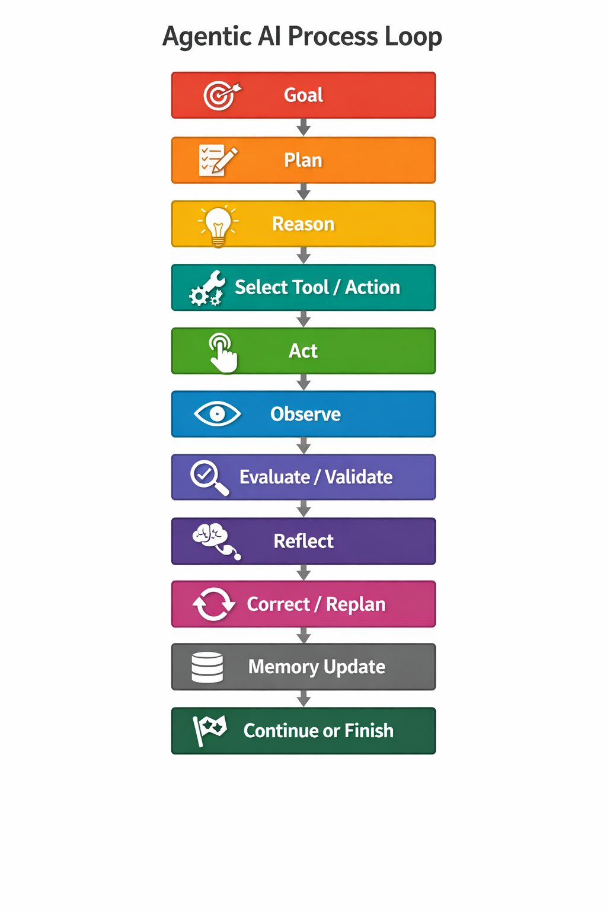
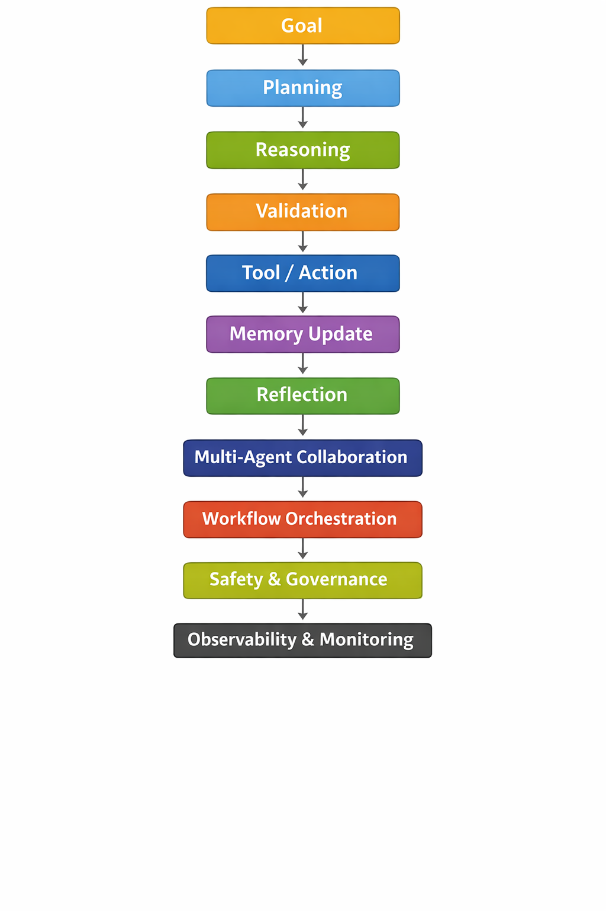

Agentic AI Process¶

Agentic AI Pattern Categories¶
| Order | Pattern Category | Purpose |
|---|---|---|
| 1 | Planning Cognitive Patterns | Define goal and create execution plan |
| 2 | Reasoning Cognitive Patterns | Analyze information and decide strategy |
| 3 | Validation Patterns | Verify plan, constraints, and safety before execution |
| 4 | Tool-Use / Action Patterns | Execute actions using tools, APIs, or systems |
| 5 | Memory Patterns | Retrieve and store contextual knowledge |
| 6 | Reflection / Self-Improvement Patterns | Evaluate results and improve reasoning |
| 7 | Multi-Agent Collaboration Patterns | Coordinate with other agents if needed |
| 8 | Orchestration & Workflow Patterns | Manage workflow execution and task coordination |
| 9 | Safety, Governance & Guardrail Patterns | Ensure compliance, policies, and safe operations |
| 10 | Learning & Optimization Patterns | Improve strategies using feedback and experience |
| 11 | Observability, Monitoring & Debugging Patterns | Monitor, trace, and debug agent behavior |
Pattern Usage Frequency (Very Important)¶
| Pattern Category | Usage Frequency |
|---|---|
| Planning | ⭐⭐⭐⭐⭐ |
| Reasoning | ⭐⭐⭐⭐⭐ |
| Tool Use | ⭐⭐⭐⭐⭐ |
| Memory | ⭐⭐⭐⭐ |
| Reflection | ⭐⭐⭐⭐ |
| Validation | ⭐⭐⭐⭐ |
| Orchestration | ⭐⭐⭐ |
| Multi-Agent | ⭐⭐⭐ |
| Safety | ⭐⭐⭐⭐ |
| Learning | ⭐⭐ |
| Observability | ⭐⭐⭐⭐ |

- Core cognitive loop → always used
- System capabilities → used only when needed
- Platform capabilities → run around the agent continuously
The Real Agent Execution Flow¶
Core Cognitive Loop (Always Used)¶
Goal
↓
Planning
↓
Reasoning
↓
Validation
↓
Tool / Action
↓
Observation
↓
Reflection
↓
Memory Update
↓
Continue or Finish
| Layer | Categories | Purpose |
|---|---|---|
| Cognitive Layer | Planning, Reasoning, Validation, Reflection | Agent thinking |
| Execution Layer | Tool Use, Memory | Agent interaction with environment |
| System Layer | Multi-Agent, Orchestration, Safety | Agent system control |
| Platform Layer | Learning, Observability | Improvement & monitoring |
Complete System Flow¶
User Goal
↓
Planning
↓
Reasoning
↓
Validation
↓
Tool / Action
↓
Observation
↓
Reflection
↓
Memory Update
Real Example Architecture¶
Observability
│
Learning & Optimization
│
Safety / Governance / Guardrails
│
Orchestration & Multi-Agent
│
┌─────────────────┐
│ Cognitive Loop │
│ │
│ Planning │
│ Reasoning │
│ Validation │
│ Tool Action │
│ Reflection │
│ Memory │
└─────────────────┘
Enterprise Autonomous Agent¶
Planning
Reasoning
Validation
Tool Use
Memory
Reflection
Multi-Agent
Orchestration
Safety
Learning
Observability
Medium Agent (RAG Assistant)¶
Simple Agent (Chatbot)¶
Planning Cognitive Patterns¶
| # | Pattern | Description | Example |
|---|---|---|---|
| 1 | Plan-Then-Execute | Create a full plan first, then execute step by step | Agent plans steps to deploy an application before running scripts |
| 2 | Plan-Act-Reflect | Plan → execute → evaluate results → improve | Incident remediation agent fixes issue then evaluates logs |
| 3 | Iterative Planning | Plan improves after each step | Agent troubleshooting a server adjusts plan after each check |
| 4 | Goal Decomposition | Break goal into smaller objectives | “Fix outage” → check DB → check API → restart service |
| 5 | Task Decomposition | Divide tasks into atomic actions | Deploy app → build → test → deploy |
| 6 | Hierarchical Planning | Multi-level planning (strategic → tasks) | Cloud provisioning: infra plan → network → compute → storage |
| 7 | Milestone Planning | Plan based on checkpoints | Software release pipeline stages |
| 8 | Contingency Planning | Backup plan if failure occurs | If DB restart fails → failover to replica |
| 9 | Risk-Aware Planning | Evaluate risk before actions | Agent avoids deleting production resources |
| 10 | Budget-Aware Planning | Plan within cost limits | FinOps agent chooses cheaper cloud instance |
| 11 | Deadline-Aware Planning | Plan optimized for time constraints | CI/CD pipeline ensuring deployment before deadline |
| 12 | Resource-Aware Planning | Consider CPU, memory, tools available | Agent schedules batch jobs based on cluster capacity |
| 13 | Dependency Planning | Plan tasks based on dependencies | Database must start before API |
| 14 | Backtracking Planning | Revert plan when path fails | Agent tries alternative troubleshooting steps |
| 15 | Scenario Planning | Plan for multiple possible outcomes | If traffic spike → auto-scale service |
| 16 | Planner-Validator Loop | Plan validated before execution | Security policy checks plan before running |
| 17 | Opportunistic Planning | Use opportunities discovered during execution | Agent uses cached results to skip redundant tasks |
| 18 | Approval-Aware Planning | Plan includes human approval steps | Production DB change requires manager approval |
| 19 | Adaptive Planning | Plan changes dynamically with new data | Monitoring agent adjusts strategy after anomaly detection |
| 20 | Parallel Planning | Plan tasks that can run simultaneously | Data pipeline processes multiple partitions |
| 21 | Autonomous Loop Planning | Agent continuously plans in loop | Autonomous monitoring agent resolving incidents |
| 22 | Predictive Planning | Plan based on predicted future state | Predict traffic spikes and scale resources early |
| 23 | Reinforcement Planning | Improve planning via feedback/rewards | RL agent optimizing resource allocation |
| 24 | Simulation-Based Planning | Test plan in simulation before execution | Disaster recovery simulation |
| 25 | Multi-Agent Planning | Multiple agents collaborate to plan | Planner agent + security agent + executor agent |
| 26 | Dynamic Planning | Plan updated when environment changes | Kubernetes autoscaling agent adjusting plan |
| 27 | Strategic Planning | Long-term objective planning | AI roadmap planning for enterprise transformation |
| 28 | Tactical Planning | Mid-term operational planning | Weekly infrastructure upgrades |
| 29 | Reactive Planning | Immediate response planning | Agent responding to service outage |
| 30 | Proactive Planning | Plan to prevent issues before they happen | Predictive maintenance agent |
Reasoning Cognitive Patterns¶
| # | Pattern | Description | Example |
|---|---|---|---|
| 1 | Chain-of-Thought (CoT) | Step-by-step reasoning before answering | Agent explains steps while diagnosing server issue |
| 2 | Tree-of-Thought (ToT) | Explore multiple reasoning branches | Agent evaluates several remediation strategies |
| 3 | Graph-of-Thought (GoT) | Non-linear reasoning graph | Complex research agent connecting ideas |
| 4 | Hypothesis Testing | Generate and test hypotheses | API failure → check network → check DB |
| 5 | Self-Consistency Reasoning | Generate multiple reasoning paths and select best | LLM runs multiple solutions to choose correct one |
| 6 | Analogical Reasoning | Solve new problems using similar past cases | Incident similar to previous outage |
| 7 | Deductive Reasoning | Apply rules to reach conclusion | If CPU >90% then scale service |
| 8 | Inductive Reasoning | Infer pattern from data | Logs show repeated timeout errors |
| 9 | Abductive Reasoning | Find most likely explanation | Error spike likely due to DB overload |
| 10 | Causal Reasoning | Identify cause-effect relationships | Memory leak causing system slowdown |
| 11 | Counterfactual Reasoning | Consider alternate scenarios | If we restart DB, will latency drop? |
| 12 | Multi-Step Reasoning | Combine several reasoning stages | Analyze logs → metrics → network |
| 13 | Recursive Reasoning | Reason about reasoning steps | Agent checks its own logic chain |
| 14 | Reflective Reasoning | Self-evaluate reasoning | Agent checks if its conclusion makes sense |
| 15 | Debate Reasoning | Multiple agents argue different viewpoints | Risk agent vs performance agent |
| 16 | Critic-Generator Loop | One agent generates, another critiques | Code generation + review agent |
| 17 | Evaluator-Optimizer | Evaluate output and refine it | Content agent improves generated report |
| 18 | Verification Reasoning | Check correctness of reasoning | Verify data from monitoring system |
| 19 | Confidence Estimation | Assign probability/confidence to answer | 80% confidence DB is root cause |
| 20 | Evidence-Based Reasoning | Use evidence before conclusions | Metrics confirm high CPU |
| 21 | Constraint-Based Reasoning | Solve within constraints | Cannot restart production DB |
| 22 | Decision Tree Reasoning | Use rule-based decision trees | If network error → check gateway |
| 23 | Monte Carlo Reasoning | Explore probabilistic outcomes | Predict best scaling option |
| 24 | Bayesian Reasoning | Update belief with new evidence | Probability of network issue increases |
| 25 | Heuristic Reasoning | Use shortcuts based on experience | Most outages caused by config change |
| 26 | Comparative Reasoning | Compare alternatives | Restart vs scale service |
| 27 | Sequential Reasoning | Solve tasks step-by-step | Diagnose application failure |
| 28 | Scenario Reasoning | Evaluate different scenarios | Traffic spike vs code bug |
| 29 | Meta-Reasoning | Reason about how to reason | Decide which reasoning method to use |
| 30 | Consensus Reasoning | Multiple agents vote on solution | Security + reliability agents decide fix |
Validation Pattern¶
| # | Pattern | Description | Example |
|---|---|---|---|
| 1 | Input Validation | Validate incoming user input | Reject malformed request |
| 2 | Output Validation | Validate generated output | Ensure JSON format correct |
| 3 | Plan Validation | Verify generated plan before execution | Validate deployment plan |
| 4 | Tool Input Validation | Validate parameters before calling tool | Check SQL query parameters |
| 5 | Tool Output Validation | Verify tool response integrity | Validate API response schema |
| 6 | Policy Validation | Ensure plan follows policy rules | Security policy enforcement |
| 7 | Constraint Validation | Validate constraints like budget/time | Prevent exceeding cost limit |
| 8 | Schema Validation | Validate structured data format | JSON schema validation |
| 9 | Data Consistency Validation | Ensure data consistency | Validate database records |
| 10 | Dependency Validation | Check dependencies before execution | Ensure DB service running |
| 11 | Permission Validation | Verify agent permissions | RBAC permission check |
| 12 | Safety Validation | Check action safety | Prevent destructive commands |
| 13 | Environment Validation | Verify system environment | Ensure correct cluster context |
| 14 | Resource Validation | Validate resource availability | Ensure enough CPU/memory |
| 15 | Precondition Validation | Check prerequisites before execution | Confirm service running |
| 16 | Postcondition Validation | Validate outcome after execution | Verify deployment succeeded |
| 17 | Result Verification | Verify correctness of result | Check output accuracy |
| 18 | Multi-Agent Validation | Multiple agents validate result | Validator agent approves |
| 19 | Cross-Source Validation | Validate against multiple sources | Compare monitoring systems |
| 20 | Confidence Validation | Accept output only above threshold | Require confidence > 80% |
| 21 | Simulation Validation | Validate action in simulation | Test infra change first |
| 22 | Dry-Run Validation | Simulate tool execution | Terraform plan preview |
| 23 | Human Validation | Human approves result | Security approval |
| 24 | Compliance Validation | Validate regulatory compliance | GDPR check |
| 25 | Consistency Validation | Compare multiple outputs | Ensure results match |
| 26 | Quality Validation | Check output quality metrics | Validate summary completeness |
| 27 | Data Integrity Validation | Verify data accuracy | Check checksum |
| 28 | Context Validation | Validate contextual correctness | Ensure correct user context |
| 29 | Runtime Validation | Validate during execution | Detect runtime errors |
| 30 | Continuous Validation | Validate continuously throughout workflow | Monitor deployment success |
Reflection / Self-Improvement Patterns¶
| # | Pattern | Description | Example |
|---|---|---|---|
| 1 | Reflexion | Agent critiques its previous answer and improves it | Code agent reviews its own generated code |
| 2 | Self-Critique | Evaluate output quality before returning | Agent checks if explanation is correct |
| 3 | Retry with Feedback | Retry task using feedback from previous attempt | LLM regenerates SQL query after error |
| 4 | Learning from Failure | Store failures to avoid repeating them | Incident agent remembers failed remediation |
| 5 | Output Review | Validate output quality internally | Generated report checked for completeness |
| 6 | Error Detection | Detect incorrect reasoning or output | Agent detects hallucinated data |
| 7 | Root Cause Reflection | Analyze why an error happened | Agent identifies incorrect assumption |
| 8 | Self-Verification | Verify results with tools or data | Validate API response with monitoring data |
| 9 | Iterative Improvement | Improve output through multiple iterations | Improve generated code step-by-step |
| 10 | Reflection Loop | Continuous reflect → improve cycle | Research agent refining findings |
| 11 | Performance Feedback Loop | Improve based on performance metrics | Agent adjusts strategy based on success rate |
| 12 | Confidence Adjustment | Modify output based on confidence level | Agent lowers confidence if uncertain |
| 13 | Peer Review | Another agent evaluates the result | Critic agent reviews planner output |
| 14 | Self-Consistency Check | Compare multiple generated outputs | Select most consistent answer |
| 15 | Corrective Reasoning | Adjust reasoning after reflection | Recalculate plan after mistake |
| 16 | Plan Revision | Update plan after evaluating results | Modify troubleshooting plan |
| 17 | Memory Reinforcement | Store successful patterns for future | Save best remediation solution |
| 18 | Reward-Based Improvement | Improve behavior using reward signals | RL agent optimizing strategy |
| 19 | Negative Feedback Learning | Learn from negative outcomes | Agent avoids unsafe actions |
| 20 | Quality Scoring | Score output quality before finalizing | Evaluate report accuracy |
| 21 | Error Recovery Strategy | Recover from failed attempts | Agent retries different approach |
| 22 | Hypothesis Revision | Modify hypothesis after new evidence | Adjust root cause analysis |
| 23 | Reflection-Guided Planning | Reflection influences next plan | Adjust troubleshooting steps |
| 24 | Audit Reflection | Review execution logs to improve | Compliance agent reviewing actions |
| 25 | Safety Reflection | Check if action violates safety rules | Prevent destructive operations |
| 26 | Confidence Calibration | Adjust confidence based on evidence | Lower confidence if data limited |
| 27 | Continuous Learning | Improve from historical data | Customer support agent learning from past tickets |
| 28 | Meta-Reflection | Reflect on reasoning strategy itself | Decide better reasoning approach |
| 29 | Self-Optimization | Improve efficiency or performance | Reduce unnecessary tool calls |
| 30 | Knowledge Update | Update internal knowledge or memory | Store new troubleshooting steps |
Tool-Use / Action Patterns¶
| # | Pattern | Description | Example |
|---|---|---|---|
| 1 | Tool Selection | Agent chooses the appropriate tool for a task | Choose kubectl to restart a pod |
| 2 | Function Calling | Call predefined functions or APIs | LLM calls get_weather(city) |
| 3 | API Invocation | Use external APIs to perform actions | Call payment gateway API |
| 4 | CLI Execution | Execute command line tools | Run kubectl scale deployment |
| 5 | Database Query Tool | Retrieve or update data in databases | Query PostgreSQL for logs |
| 6 | Search Tool | Use search engines or knowledge base | Agent searches documentation |
| 7 | Retrieval Tool | Fetch documents from vector DB or RAG system | Retrieve knowledge from Pinecone |
| 8 | Tool Chaining | Sequentially combine multiple tools | Query DB → analyze results → update record |
| 9 | Parallel Tool Execution | Run multiple tools simultaneously | Check logs and metrics at the same time |
| 10 | Conditional Tool Use | Select tools based on conditions | If CPU > 90% → scale cluster |
| 11 | Tool Retry | Retry tool when execution fails | Retry API call after timeout |
| 12 | Tool Fallback | Switch to alternative tool if one fails | Use backup monitoring API |
| 13 | Tool Validation | Validate tool inputs and outputs | Ensure SQL query syntax correct |
| 14 | Tool Result Parsing | Convert tool output into structured data | Parse JSON response from API |
| 15 | Tool Composition | Combine outputs of multiple tools | Merge metrics and logs |
| 16 | Tool Loop Execution | Repeatedly call tool until condition met | Poll system health until stable |
| 17 | Tool Approval | Require human approval before tool execution | Approve production DB change |
| 18 | Tool Safety Guard | Prevent unsafe tool usage | Block delete database command |
| 19 | Tool Rate Limiting | Limit tool calls to prevent overload | Restrict API calls per minute |
| 20 | Tool Cost Control | Monitor cost of tool usage | Limit expensive API calls |
| 21 | Tool Monitoring | Track tool performance and success | Log API latency and success rate |
| 22 | Tool Logging | Record tool calls for auditing | Save all executed commands |
| 23 | Tool Timeout Handling | Handle tool execution timeout | Retry command if timeout occurs |
| 24 | Tool Result Caching | Cache tool outputs for reuse | Cache API results |
| 25 | Tool Delegation | Assign tool execution to another agent | Executor agent performs CLI command |
| 26 | Multi-Tool Orchestration | Coordinate multiple tools in workflow | Monitor → diagnose → remediate |
| 27 | Tool Capability Discovery | Agent discovers available tools dynamically | Query tool registry |
| 28 | Tool Context Injection | Provide context when calling tools | Pass user session to API |
| 29 | Tool Simulation | Simulate tool execution before real action | Test infrastructure change |
| 30 | Tool Sandbox Execution | Run tool in safe sandbox environment | Test script in isolated container |
Memory Patterns¶
| # | Pattern | Description | Example |
|---|---|---|---|
| 1 | Short-Term Memory | Temporary memory during task execution | Agent remembers conversation context |
| 2 | Long-Term Memory | Persistent memory across sessions | Store past troubleshooting solutions |
| 3 | Episodic Memory | Store past events or experiences | Record incident remediation history |
| 4 | Semantic Memory | Store factual knowledge | Knowledge base of company policies |
| 5 | Procedural Memory | Store how-to knowledge or workflows | Runbook for database recovery |
| 6 | Context Memory | Maintain conversation context | Chatbot remembering previous question |
| 7 | Task Memory | Store progress of ongoing task | Multi-step workflow state |
| 8 | Session Memory | Memory limited to current session | Temporary user preferences |
| 9 | Shared Memory | Memory shared across agents | Multi-agent collaboration context |
| 10 | Agent-Specific Memory | Memory unique to one agent | Planner agent storing planning patterns |
| 11 | Retrieval Memory | Fetch memory using embeddings or indexes | Vector DB search |
| 12 | Vector Memory | Store embeddings in vector database | Pinecone storing knowledge vectors |
| 13 | Graph Memory | Knowledge stored as relationships | Knowledge graph linking incidents |
| 14 | Key-Value Memory | Store structured data as key-value pairs | Redis storing session info |
| 15 | Event Memory | Store system events | Log monitoring history |
| 16 | Temporal Memory | Time-aware memory storage | Track system behavior over time |
| 17 | Incremental Memory | Continuously update memory | Add new support cases to knowledge |
| 18 | Memory Consolidation | Merge related memories | Combine repeated troubleshooting results |
| 19 | Memory Compression | Summarize memory to reduce size | Compress long conversation history |
| 20 | Memory Pruning | Remove irrelevant or outdated memory | Delete obsolete logs |
| 21 | Priority Memory | Store high-priority knowledge first | Critical outage runbooks |
| 22 | Memory Versioning | Track versions of stored knowledge | Different versions of system configs |
| 23 | Memory Validation | Verify stored knowledge accuracy | Confirm runbook correctness |
| 24 | Memory Retrieval Ranking | Rank retrieved memory results | Choose best troubleshooting case |
| 25 | Contextual Memory Recall | Retrieve memory relevant to current task | Incident similar to previous outage |
| 26 | Memory Reinforcement | Strengthen frequently used knowledge | Popular solution reused often |
| 27 | Memory Sharing | Share knowledge across multiple agents | Planner shares context with executor |
| 28 | Privacy-Aware Memory | Protect sensitive stored information | Mask user credentials |
| 29 | Policy-Aware Memory | Store memory according to compliance rules | GDPR compliant data storage |
| 30 | Learning Memory | Update memory based on agent learning | Improve troubleshooting recommendations |
Multi-Agent Collaboration Patterns¶
| # | Pattern | Description | Example |
|---|---|---|---|
| 1 | Planner-Executor Pattern | One agent plans, another executes | Planner agent creates deployment plan, executor runs scripts |
| 2 | Supervisor Pattern | One agent supervises others | Supervisor agent monitors worker agents |
| 3 | Hierarchical Agents | Multi-level command structure | Manager agent coordinating specialist agents |
| 4 | Peer-to-Peer Collaboration | Agents communicate directly | Two research agents share findings |
| 5 | Specialist Agents | Each agent has domain expertise | Security agent + DevOps agent |
| 6 | Role-Based Agents | Agents assigned predefined roles | Planner, Executor, Validator |
| 7 | Agent Delegation | Agent assigns subtask to another | Research agent delegates data analysis |
| 8 | Coordinator Agent | Central agent coordinates workflow | Workflow orchestration agent |
| 9 | Consensus Decision | Agents vote on decision | Risk agents vote before approving action |
| 10 | Debate Pattern | Agents argue different perspectives | Security agent vs performance agent |
| 11 | Critic-Generator Pattern | One agent generates, another critiques | Code generator + code reviewer |
| 12 | Multi-Agent Planning | Multiple agents contribute to plan | Infrastructure + security planning |
| 13 | Agent Pipeline | Sequential agent workflow | Research → summarize → report |
| 14 | Parallel Agents | Agents run tasks simultaneously | Data processing across nodes |
| 15 | Blackboard Architecture | Shared workspace for agents | Agents update shared task board |
| 16 | Agent Market / Bidding | Agents bid to perform task | Agent with best capability executes |
| 17 | Task Routing | Route tasks to best agent | Customer query routed to billing agent |
| 18 | Negotiation Pattern | Agents negotiate resource allocation | Compute resource distribution |
| 19 | Conflict Resolution | Resolve disagreement between agents | Security vs performance trade-off |
| 20 | Shared Memory Collaboration | Agents share context memory | Planner shares context with executor |
| 21 | Event-Driven Collaboration | Agents triggered by events | Alert triggers remediation agent |
| 22 | Chain-of-Agents | Agents pass results sequentially | Data extraction → analysis → visualization |
| 23 | Federated Agents | Agents operate across distributed systems | Multi-cloud monitoring agents |
| 24 | Swarm Agents | Large number of small agents collaborate | Distributed web crawling agents |
| 25 | Dynamic Agent Creation | Agents created on demand | Temporary agents for specific task |
| 26 | Agent Termination Pattern | Remove agents when task finished | Temporary worker agent shuts down |
| 27 | Agent Capability Discovery | Agents discover other agents' skills | Agent registry lookup |
| 28 | Leader-Follower Pattern | Leader agent coordinates workers | Master agent managing tasks |
| 29 | Agent Orchestration | Central system orchestrates agents | LangGraph workflow |
| 30 | Multi-Agent Learning | Agents learn from each other | Knowledge sharing among agents |
Safety, Governance & Guardrail Patterns¶
| # | Pattern | Description | Example |
|---|---|---|---|
| 1 | Input Validation | Validate user inputs before processing | Reject malformed API request |
| 2 | Output Validation | Verify generated output before returning | Ensure SQL query is safe |
| 3 | Policy Enforcement | Ensure actions follow enterprise policies | Block deleting production DB |
| 4 | Role-Based Access Control (RBAC) | Restrict agent actions based on role | Dev agent cannot modify security rules |
| 5 | Attribute-Based Access Control (ABAC) | Access based on attributes like user, time, location | Only admin allowed during maintenance window |
| 6 | Approval Workflow | Require human approval before critical actions | Approve infrastructure changes |
| 7 | Human-in-the-Loop | Pause execution for human decision | Security review before deployment |
| 8 | Risk Assessment | Evaluate risk before action | Agent checks blast radius before scaling cluster |
| 9 | Safety Filters | Detect harmful or restricted actions | Block data deletion commands |
| 10 | Sensitive Data Masking | Hide confidential information | Mask credit card numbers |
| 11 | PII Protection | Detect and protect personal data | Redact personal details in logs |
| 12 | Compliance Enforcement | Follow regulatory requirements | GDPR data processing checks |
| 13 | Action Allowlist | Only allow predefined safe actions | Only approved APIs callable |
| 14 | Action Blocklist | Block specific dangerous actions | Block DROP DATABASE |
| 15 | Budget Guardrails | Prevent exceeding cost limits | Stop agent after spending threshold |
| 16 | Rate Limiting | Limit request frequency | Restrict API calls per minute |
| 17 | Tool Permission Control | Restrict which tools agents can use | Agent cannot call destructive CLI commands |
| 18 | Safety Sandbox | Execute actions in isolated environment | Test commands in container sandbox |
| 19 | Execution Dry Run | Simulate action before real execution | Preview Terraform changes |
| 20 | Confidence Threshold | Only execute if confidence high enough | Require >80% certainty |
| 21 | Multi-Agent Validation | Multiple agents verify action | Security agent validates deployment |
| 22 | Audit Logging | Record all actions for traceability | Log every CLI command executed |
| 23 | Traceability | Track reasoning and decisions | Maintain reasoning trace |
| 24 | Policy-Aware Planning | Plan actions based on governance rules | Avoid risky infrastructure changes |
| 25 | Kill Switch | Emergency shutdown of agent | Disable autonomous remediation |
| 26 | Timeout Guardrail | Stop long-running tasks | Abort infinite loops |
| 27 | Escalation Policy | Escalate issues to human operators | Notify SRE team for critical incidents |
| 28 | Context Isolation | Prevent cross-session data leakage | Separate user contexts |
| 29 | Trust Verification | Verify external data sources | Validate monitoring API data |
| 30 | Ethical Compliance | Ensure ethical AI behavior | Prevent harmful recommendations |
Orchestration & Workflow Patterns¶
| # | Pattern | Description | Example |
|---|---|---|---|
| 1 | Centralized Orchestrator | One central controller manages all tasks and agents | Workflow engine controlling all agents |
| 2 | Decentralized Orchestration | Agents coordinate without a central controller | Peer agents collaborating directly |
| 3 | Workflow Pipeline | Tasks executed sequentially in stages | Data ingestion → processing → reporting |
| 4 | Event-Driven Workflow | Tasks triggered by events | Alert triggers remediation workflow |
| 5 | State Machine Workflow | Execution based on defined states | Incident lifecycle management |
| 6 | DAG Workflow | Directed Acyclic Graph task dependencies | ETL pipelines |
| 7 | Step-by-Step Workflow | Execute tasks one step at a time | Troubleshooting process |
| 8 | Parallel Workflow | Multiple tasks executed simultaneously | Multi-region monitoring checks |
| 9 | Conditional Workflow | Execution based on conditions | If CPU > 90% then scale cluster |
| 10 | Retry Workflow | Automatically retry failed tasks | Retry failed API call |
| 11 | Fallback Workflow | Use alternative workflow if primary fails | Switch to backup service |
| 12 | Loop Workflow | Repeat task until condition satisfied | Poll service until healthy |
| 13 | Branching Workflow | Workflow splits into multiple paths | Different remediation strategies |
| 14 | Aggregation Workflow | Combine results from multiple tasks | Merge analysis results |
| 15 | Approval Workflow | Require approval before next step | Production change approval |
| 16 | Human Task Workflow | Human performs part of workflow | Manual security review |
| 17 | Multi-Agent Workflow | Multiple agents participate in workflow | Planner → Executor → Validator |
| 18 | Task Queue Workflow | Tasks distributed via queue | Worker agents consuming tasks |
| 19 | Microservice Orchestration | Coordinate microservices | Order processing pipeline |
| 20 | Saga Workflow | Manage distributed transactions | Payment processing rollback |
| 21 | Compensation Workflow | Undo previous steps if failure occurs | Rollback deployment |
| 22 | Long-Running Workflow | Workflow that runs for extended duration | Data processing jobs |
| 23 | Checkpoint Workflow | Save progress at checkpoints | Resume workflow after failure |
| 24 | Streaming Workflow | Process continuous data streams | Real-time log processing |
| 25 | Dynamic Workflow | Workflow generated at runtime | AI agent generates execution plan |
| 26 | Policy-Aware Workflow | Workflow controlled by policy rules | Security compliance checks |
| 27 | Resource-Aware Workflow | Allocate resources dynamically | Scale compute for heavy tasks |
| 28 | Budget-Aware Workflow | Optimize workflow based on cost | Choose cheaper compute nodes |
| 29 | Observability Workflow | Monitor execution metrics | Track workflow performance |
| 30 | Self-Healing Workflow | Automatically recover from failures | Restart failed pipeline stage |
Learning & Optimization Patterns¶
| # | Pattern | Description | Example |
|---|---|---|---|
| 1 | Reinforcement Learning | Learn optimal actions through reward signals | Agent improves resource allocation |
| 2 | Feedback Learning | Improve outputs based on feedback | User feedback improves chatbot responses |
| 3 | Human Feedback Learning (RLHF) | Learn from human corrections | Human ranks best generated answer |
| 4 | Self-Learning | Agent learns from its own experiences | Agent stores successful solutions |
| 5 | Continuous Learning | Incrementally update knowledge | Customer support agent learning from tickets |
| 6 | Online Learning | Learn in real time during operation | Fraud detection model updating with new data |
| 7 | Offline Learning | Train using historical data | Train agent with past incident logs |
| 8 | Experience Replay | Reuse past experiences for learning | Replay past system failures |
| 9 | Reward Optimization | Maximize reward signals | Optimize cloud cost savings |
| 10 | Policy Optimization | Improve action policies | Update decision rules |
| 11 | Adaptive Learning | Adjust behavior dynamically | Adjust scaling strategy based on load |
| 12 | Meta-Learning | Learn how to learn better | Agent improves problem-solving strategies |
| 13 | Transfer Learning | Apply knowledge to new tasks | Apply troubleshooting knowledge across services |
| 14 | Curriculum Learning | Learn tasks from simple to complex | Train agent gradually |
| 15 | Exploration-Exploitation | Balance trying new vs known strategies | Try new scaling strategies |
| 16 | Performance Monitoring | Track system performance metrics | Monitor agent success rate |
| 17 | Self-Optimization | Improve efficiency automatically | Reduce unnecessary tool calls |
| 18 | Cost Optimization | Optimize actions to minimize cost | Choose cheaper cloud instance |
| 19 | Latency Optimization | Reduce execution time | Optimize query execution |
| 20 | Resource Optimization | Efficient resource allocation | Optimize compute usage |
| 21 | Error Pattern Learning | Learn from repeated failures | Recognize recurring outage patterns |
| 22 | Strategy Adaptation | Modify strategy based on outcomes | Change incident response strategy |
| 23 | Behavior Tuning | Adjust agent behavior parameters | Adjust retry strategy |
| 24 | Knowledge Expansion | Expand knowledge base over time | Add new troubleshooting guides |
| 25 | Multi-Agent Learning | Agents learn from each other | Share knowledge across agents |
| 26 | Reward Shaping | Modify reward signals to guide learning | Encourage faster solutions |
| 27 | Confidence Calibration | Adjust confidence estimation | Improve answer reliability |
| 28 | Automated Benchmarking | Evaluate performance against benchmarks | Compare agent performance across tasks |
| 29 | Continuous Evaluation | Evaluate outputs continuously | Monitor response quality |
| 30 | Autonomous Improvement Loop | Self-improving feedback loop | Agent improves remediation strategies |
Observability, Monitoring & Debugging Patterns¶
| # | Pattern | Description | Example |
|---|---|---|---|
| 1 | Execution Tracing | Track full execution path of an agent | Trace planner → executor → validator |
| 2 | Reasoning Trace | Capture reasoning steps for debugging | Log chain-of-thought steps |
| 3 | Tool Call Logging | Record all tool/API calls | Log every API request |
| 4 | Telemetry Collection | Collect runtime metrics | Track token usage |
| 5 | Metrics Monitoring | Monitor performance metrics | Response latency dashboard |
| 6 | Agent Health Monitoring | Monitor agent availability | Alert when agent crashes |
| 7 | Error Logging | Record system errors | Log failed API calls |
| 8 | Failure Analysis | Analyze causes of failures | Identify tool timeout errors |
| 9 | Incident Detection | Detect anomalies automatically | Alert when agent behaves abnormally |
| 10 | Performance Profiling | Analyze resource usage | CPU usage per agent |
| 11 | Token Usage Tracking | Monitor token consumption | Optimize LLM cost |
| 12 | Latency Monitoring | Track response time | Measure agent decision time |
| 13 | Action Auditing | Record actions for compliance | Audit infrastructure changes |
| 14 | Decision Transparency | Show reasoning behind decisions | Explain why agent chose action |
| 15 | Workflow Visualization | Visualize agent workflow | Graph view of execution path |
| 16 | Trace Correlation | Link logs across systems | Connect logs from multiple agents |
| 17 | Distributed Tracing | Trace across distributed agents | Multi-agent workflow tracing |
| 18 | Debug Mode Execution | Run agent in debug mode | Print reasoning steps |
| 19 | Replay Debugging | Replay agent execution | Replay past incident resolution |
| 20 | Simulation Debugging | Test scenarios without production impact | Simulate outage |
| 21 | Root Cause Debugging | Identify root cause of agent failures | Analyze reasoning path |
| 22 | Observability Dashboard | Central monitoring dashboard | AgentOps monitoring panel |
| 23 | Alerting System | Notify when anomalies occur | PagerDuty alert |
| 24 | Event Logging | Track system events | Log workflow transitions |
| 25 | State Monitoring | Monitor workflow state transitions | Track LangGraph states |
| 26 | Trace Sampling | Sample traces to reduce overhead | Log 10% of requests |
| 27 | Compliance Logging | Maintain compliance logs | Record all regulated actions |
| 28 | Explainability Logging | Provide explanations for decisions | Explain remediation choice |
| 29 | Agent Behavior Analytics | Analyze patterns in agent actions | Detect abnormal decisions |
| 30 | Continuous Observability Loop | Monitor → analyze → improve cycle | Continuous agent optimization |